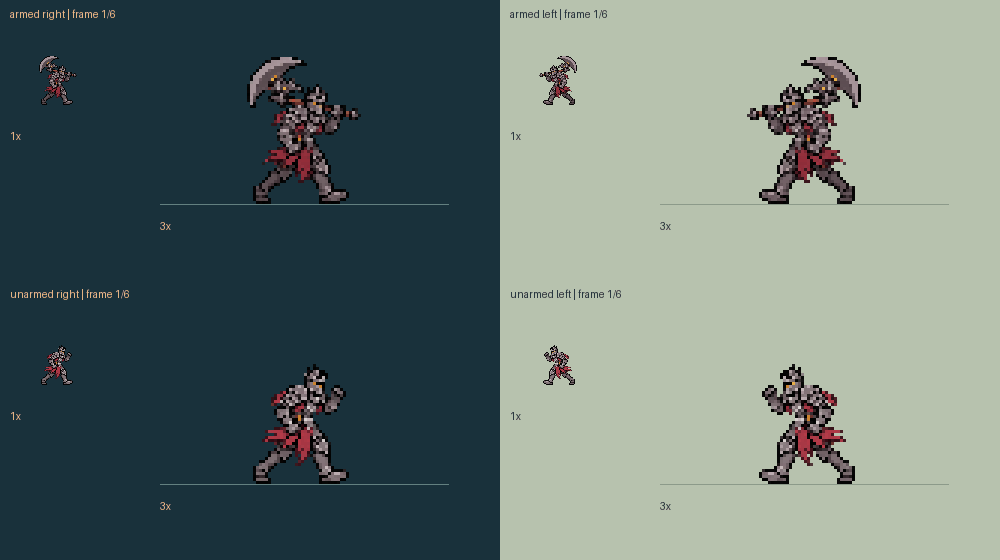
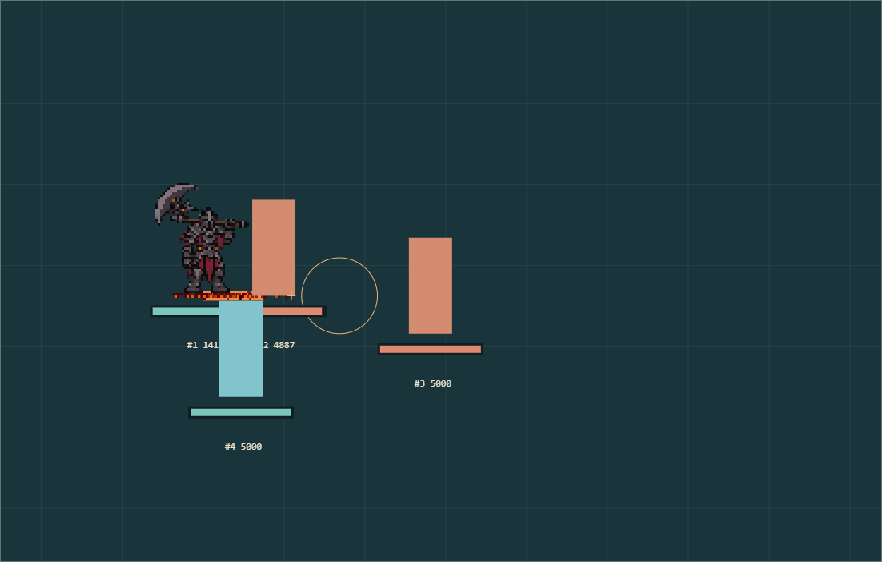

Standing · run · headbutt · unarmed
Actual size and 3× on light/dark terrain. The walk above is animated; these are the remaining pose directions. Attack/cast/death animation completion remains pending.

The previous split-body rig is superseded. These complete redraws keep the armour, closed helmet and axe identity with a slimmer silhouette.
Playable Lab — new mechanics and whole-body key-pose preview
Six different complete body drawings at the existing 80 ms timing. Knees, hips, shoulders and cloth move together. The ground line shows the fixed foot anchor.

Actual size and 3× on light/dark terrain. The walk above is animated; these are the remaining pose directions. Attack/cast/death animation completion remains pending.

The fissure lies flat on the ground. Only its endpoint creates the upright pillar. Its presentation follows the committed ground direction.

Bulwark: 54,000 reach · 0.6 s preparation · 0.3 s advancing fissure · 0.2 s pillar delay. Bash: 40,000 reach · 36,000 knockback. Ultimate: 40,000 impact radius · 62,000 cage · 10° total steering budget.
Native cage limitations and actual-game acceptance remain pending. No installation or career migration performed.